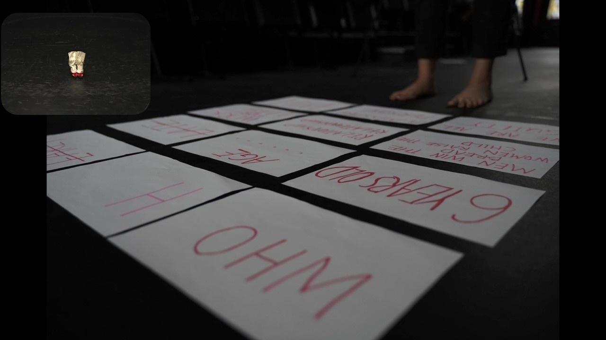

The performance is a Practice as Research Project. This theatre project will be a solo performance with short presentation in James Arnott Theatre. The purpose of the final performance is to achieve 35 minutes of solo performance in the theatre.
The production also involves using the sound, video, and media to make up the storyspecifc and focus on training or preparing which happens behind the stage. During the show, Wanjin will be the only actress on the stage physically. The combing methods of using technique or media equipment is a difficult part while rehearsing on timing the lines. My stage of dramatic rehearsal is also a stage of presenting ideas.
This period needs to show my idea and optimize the characterization. In rehearsal activities, on the one hand, I need to carefully explain the script to the actors to help them grasp the character and the life of the characters in the play. On the other hand, I need to stimulate the creativity of the actors, coordinate with the personnel of stage design, audio design, costume design and other stage technology, so as to lay a solid foundation for the smooth development of theatrical performance activities. It can be seen that the elements in theatrical rehearsal are very important, and whether they are properly used will directly affect the success or failure of the performance.
In my project, the events are sorted out and performed well in the creation. The dramatic plot has been clearly and well displayed. I first need to carefully analyze the situation in which the event is located and clarify the contradictions contained in the situation. Second, I need to grasp the specific functions of props in rehearsal to lay a good foundation for plot presentation. The props guide actors to use props to shape their roles. In the rehearsal, I need to coordinate the props with the performance. Thirdly, in the rehearsal of “Who are you?”, I usually create the focus by means of stage scheduling in order to attract the audience and highlight the important details or clues in the script. In my performance, I have combined the peer sound and audio to make my performance more vidid. In addition, I have also fixed the music “are you ready”, “shi yu zhuo” and “Who are you translating”.
The production also involves using the sound, video, and media to make up the storyspecifc and focus on training or preparing which happens behind the stage. During the show, Wanjin will be the only actress on the stage physically. The combing methods of using technique or media equipment is a difficult part while rehearsing on timing the lines. My stage of dramatic rehearsal is also a stage of presenting ideas.
This period needs to show my idea and optimize the characterization. In rehearsal activities, on the one hand, I need to carefully explain the script to the actors to help them grasp the character and the life of the characters in the play. On the other hand, I need to stimulate the creativity of the actors, coordinate with the personnel of stage design, audio design, costume design and other stage technology, so as to lay a solid foundation for the smooth development of theatrical performance activities. It can be seen that the elements in theatrical rehearsal are very important, and whether they are properly used will directly affect the success or failure of the performance.
In my project, the events are sorted out and performed well in the creation. The dramatic plot has been clearly and well displayed. I first need to carefully analyze the situation in which the event is located and clarify the contradictions contained in the situation. Second, I need to grasp the specific functions of props in rehearsal to lay a good foundation for plot presentation. The props guide actors to use props to shape their roles. In the rehearsal, I need to coordinate the props with the performance. Thirdly, in the rehearsal of “Who are you?”, I usually create the focus by means of stage scheduling in order to attract the audience and highlight the important details or clues in the script. In my performance, I have combined the peer sound and audio to make my performance more vidid. In addition, I have also fixed the music “are you ready”, “shi yu zhuo” and “Who are you translating”.